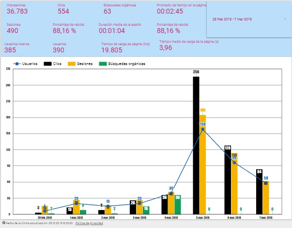

Es una plataforma que ayuda a lograr los objetivos de negocio, hay algunas etapas por las cuales el usuario pasa de la toma de decisión, es decir, si compran o no un determinado producto o servicio en el cual están interesados, para ello antes han visto o encontrado un estímulo asi que empiezan a buscar la información en diferentes lugares de internet.
Por lo anterior podemos decir que la decisión de compra es ese primer momento de la verdad y es allí donde es importante estar justo en el momento donde el usuario requiere dicho producto, internet nos ayuda a lograrlo conectando a los usuarios con nuestras marcas, pues estos usuarios navegan, comparan para investigar, consumen video, asi que si nos ponemos de manera virtual les estamos diciendo que somos una opción para ellos y este es el momento cero de la verdad.
De momento se han descrito algunas de las etapas del proceso de compra y/o etapas de los usuarios esto va relacionado a la tecnología móvil que ha cambiado la vida de casi todos ya que es parte de nuestros cuerpos pues se nos dificulta estar lejos de estos aparatos tecnológicos y están impactando de otra manera en los negocios pues el 70% de los cibernautas están en etapa de búsqueda de convencimiento por medio de estos móviles, por consiguiente encontramos diferentes etapas del embudo de marketing que son de conocimiento, consideración, conversión, lealtad todas estas apuntan a la intención comercial que tiene un usuario con el producto y/o servicio que ofrecemos.

Por consiguiente el usuario VE de momento no tiene una intención comercial, PIENSA está el usuario considerando la compra del producto y/o servicio, HACER tiene una fuerte intención comercial aquí es donde se aprovechar para posicionarse dando una oferta de valor, CUIDA que es lo que buscan las marcas cuidar a sus clientes es decir fidelizarlos. Asi que podemos ver como conectamos con estas personas, construyendo relaciones por medio de internet, llegando a diferentes grupos de personas.
De esta manera mediante los anuncios pagos de google conectamos con diferentes audiencias en diferentes plataformas o redes en diferentes momentos de acuerdo a la intención, respondiendo a sus necesidades. Usando la metodología de google anuncios pagos las marcas y negocios se dan a conocer, generan conciencia, venden, atraen tráfico y esto por medio de las diferentes plataformas; esto por ejemplo con la plataforma RED DE BUSQUEDA, se hace eligiendo ante que palabras claves queremos que el anuncio pago salga y los usuarios le den click y se informen del negocio o servicio que ofrecemos, establecemos los días y con que frecuencia, ante que temas o tipos de sitios web queremos que los anuncios pagos de google aparezcan y asi se van generando estadísticas que nos indican cual es el comportamiento del usuario, la RED DE BUSQUEDA por ejemplo nos ayudara a llegar a clientes que buscan activamente nuestro producto y/o servicio de forma activa.
Por último la RED DE DISPLAY tiene más de 2.000.000 millones de sitios web, videos y aplicaciones en los que se pueden colocar los anuncios pagos, más del 90% de usuarios en internet utiliza la red de display para navegar, para informarse, leer diferentes temas y google cuenta con más de un billón de impresiones para más de 1000 millones de usuarios cada mes. Aquí display ayuda con la etapa de conocimiento de marca, colocar la marca o negocio en ciertos lugares de display para generan conciencia, recordación “ hey usuario existo”. A su vez también la RED DE GOOGLE VIDEO es otra plataforma fundamental, profundizaremos un poco más en otro artículo.